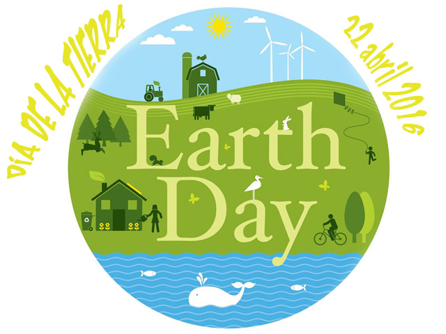
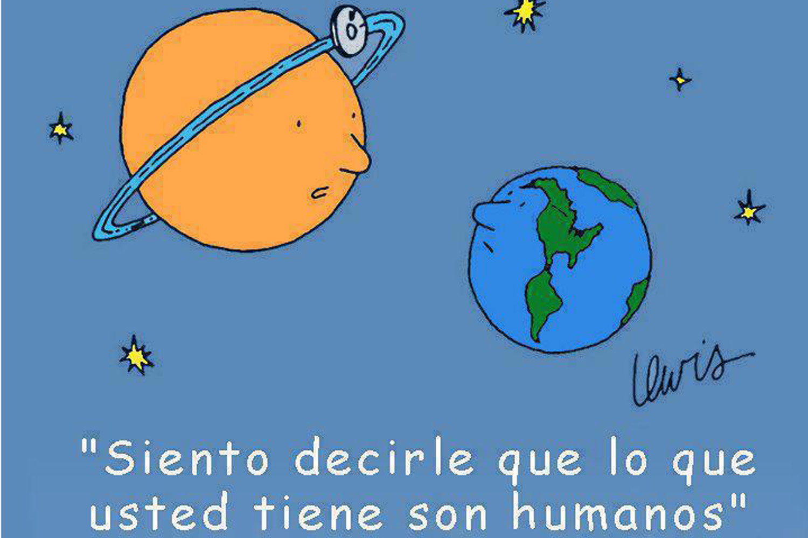
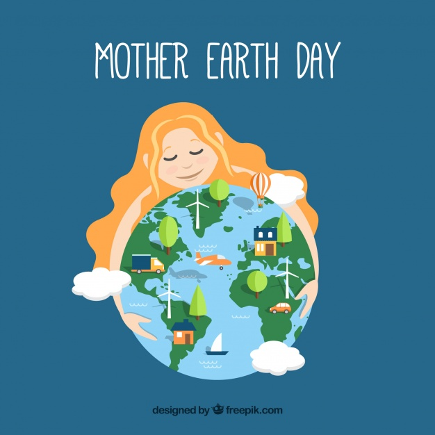
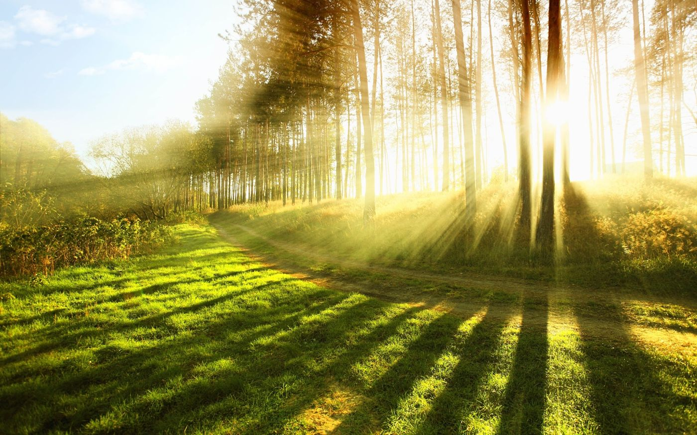
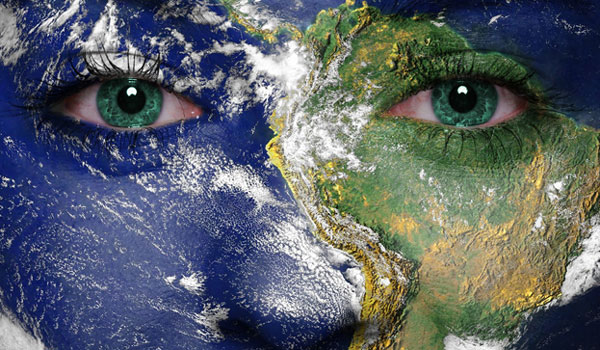
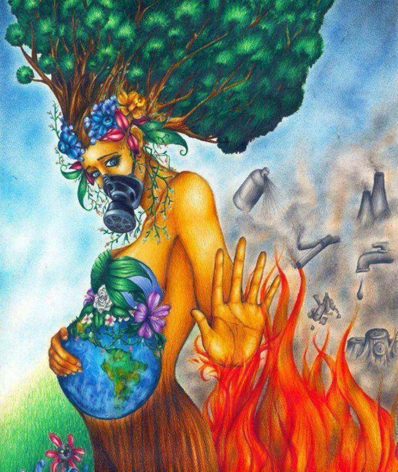

Día Internacional de la Madre Tierra 22 de Abril
- 


- 
- 
- 

- 
Jorge
Realizado Por:
semestre 4° Grupo: "F"
Especialidad:
Programación
Submódulo:
Desarrolla Aplicaciones Móviles
Docente
Lic. José Atonio Gómez Hernández
semestre 4° Grupo: "F"
Programación
Desarrolla Aplicaciones Móviles
Lic. José Atonio Gómez Hernández
Celebramos el Día Internacional de la Madre Tierra para recordar que el planeta y sus ecosistemas nos dan la vida y el sustento. Con este día asumimos, además, la responsdabilidad colectiva, como nos recordaba la Declaración de Río de 1992, de fomentar esta armonía con la naturaleza y la Madre Tierra. Este día nos brinda también la oportunidad de concienciar a todos los habitantes del planeta acerca de los problemas que afectan al planeta y las diferentes formas de vida que en él se desarrollan.
«Madre Tierra» es una expresión común utilizada para referirse al Planeta Tierra en diversos países y regiones, lo que demuestra la interdependencia existente entre los seres humanos, las demás especies vivas y el planeta que todos habitamos. La Tierra y sus ecosistemas son nuestro hogar. Para alcanzar un justo equilibrio entre las necesidades económicas, sociales y ambientales de las generaciones presentes y futuras, es necesario promover la armonía con la naturaleza y el planeta. Celebramos el Día Internacional de la Madre Tierra para recordar que el planeta y sus ecosistemas nos dan la vida y el sustento. Con este día, asumimos, además, la responsabilidad colectiva, como nos recordaba la Declaración de Río de 1992, de fomentar esta armonía con la naturaleza y la Madre Tierra. Este día nos brinda también la oportunidad de concienciar a todos los habitantes del planeta acerca de los problemas que afectan a la Tierra y a las diferentes formas de vida que en él se desarrollan.

Celebramos el Día Internacional de la Madre Tierra para recordar que el planeta y sus ecosistemas nos dan la vida y el sustento. Con este día asumimos, además, la responsdabilidad colectiva, como nos recordaba la Declaración de Río de 1992, de fomentar esta armonía con la naturaleza y la Madre Tierra. Este día nos brinda también la oportunidad de concienciar a todos los habitantes del planeta acerca de los problemas que afectan al planeta y las diferentes formas de vida que en él se desarrollan.